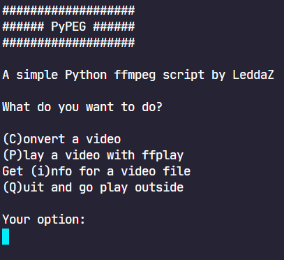

A place to dump my stuff
PyPEG is the "successor" of ffscript, it's written in Python and has more stuff.
ffscript is a script to automate video conversion with ffmpeg on Windows and Linux. It has been replaced by PyPEG, use it instead of this.


ADBManager is a simple app written in VB.NET to quickly run some basic ADB commands from a graphical interface made in Windows Forms. I'm no longer updating this, there's no point in doing so.